Analysis
Contractions
Connected two point correlation functions
First we choose interpolating operators with the quantum numbers of the meson we would like to study:
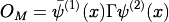
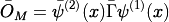
where 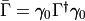. The gamma matrix is
chosen to have the same 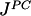 quantum numbers as the meson we want to
create. We then calculate the expectation value to create a meson at 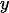
and destroy it again at  :
:
![\begin{aligned}
\langle O_M(x) \bar{O}_M'(y) \rangle =& \langle \bar{\psi}^{(1)}(x) \Gamma \psi^{(2)}(x) \bar{\psi}^{(2)}(y) \bar{ \Gamma }' \psi^{(1)}(y) \rangle
\\
=& \Gamma_{\alpha \beta} \bar{ \Gamma }'_{\gamma \delta} \langle \bar{\psi}^{(1)}_\alpha(x) \psi^{(2)}_\beta(y) \bar{\psi}^{(2)}_\gamma(y) \psi^{(1)}_\delta(x) \rangle \\
=& -\Gamma_{\alpha \beta} \bar{ \Gamma }'_{\gamma \delta} \langle \psi^{(2)}_\beta(x) \bar{\psi}^{(2)}_\gamma(y) \psi^{(1)}_\delta(y)
\bar{\psi}^{(1)}_\alpha (x) \rangle\end{aligned}](../_images/math/3288863807085e88e6a93546271fe296af1697a6.png)
where the sign in the last line comes from exchanging the anticommuting 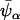 three times. Wick contracting where 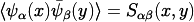 gives
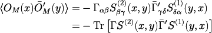
To get correlation functions we Fourier transform, ie. sum over all source and sink seperations while projecting onto the momentum we want to give to the particle:
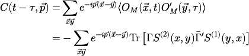
here 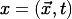 and 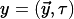 and the zero momentum correlator is:
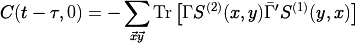
We now use  Hermiticity: 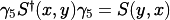,
Hermiticity: 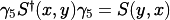,
(1)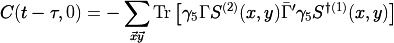
Point Sources
Using a delta function source and solving the Dirac equation gives a point propagator,
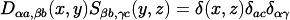
usually 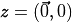 so we get 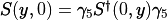. Then we use these to calculate correlation functions,
(2)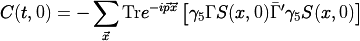
Translational invariance in the limit of infinitely many gauge
configurations implies 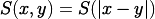, so the sum over 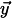
in equation eq:corr just gives 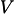 times equation eq:pointcorr. We place the source at the time origin so 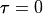.
One-end Trick
For this method it helps to write all the indices out,
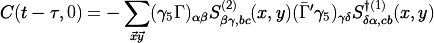
Greek indices 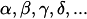 are spinor indices and Latin indices 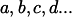 are colour indices. The one-end trick involves inserting a delta function in colour, spin and space.
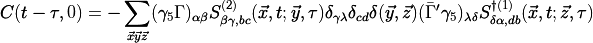
The delta function is aproximated with a 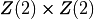 noise source on timeslice 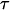
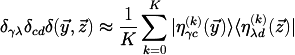
which is exact in the limit 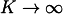.
(3)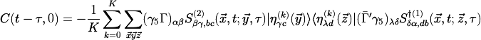
Defining
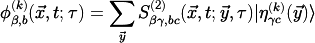
and
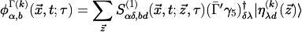
the correlator can be evaluated as,
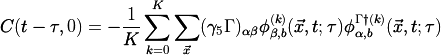
Implementation in HiRep
In HiRep the code Spectrum/mk_mesons_with_z2semwall.c does two solves to
calculate 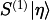 and 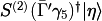. HiRep has
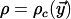
a colour vector at all (even) spatial sites and non-zero only on timeslice .
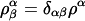
eg.
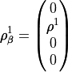
It then solves for the four objects
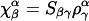
eg.
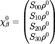
For every different  that is required it does four more inversions,
that is required it does four more inversions,
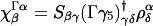
before calculating the correlator as,
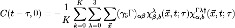
where the 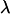 sum is over the 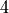 spinor components.
We should be able to improve the signal and reduce the number of inversions with two modifications. First, instead of having a different noise vector for every spin component we reuse the same noise, i.e.
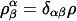
for fixed 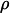. Using less noise seems to be generally preferred.
Secondly there is no need to invert for every different . Let,
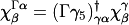
This is true because,
then the correlation function is
as before. By using the spin_matrix object in HiRep to construct the objects the correlators can be calculated with only inversions.
Disconnected
The Disconnected contributions occur when we have fermion species of the same type in the hadron interpolator :
The same manipulations that lead to equation (5) give,
There are two allowed Wick contractions,
the connected and disconnected contributions. Fourier transforming the first term gives us the same result as before. For the disconnected part,
again and , the zero momentum correlator is
This means we have to evaluate objects like,
Using
which implies
![\begin{aligned}
\frac{1}{K} \sum_{k}^K \sum_{\vec{x}} \text{Tr} \left[ \langle \eta^{(k)}(\vec{x}) | \Gamma | \phi^{(k)} (\vec{x}, t; \tau) \rangle \right] =& \frac{1}{K} \sum_{k}^K \sum_{\vec{x}} \Gamma_{\beta \gamma} | \phi^{(k)}_{\gamma, b}(\vec{x}, t; \tau) \rangle \langle \eta^{(k)}_{\beta b }(\vec{x}) | \\
=& \frac{1}{K} \sum_{k}^K \sum_{\vec{x}} \Gamma_{\beta \gamma} \sum_{\vec{y}} S_{\gamma \alpha,b c} (\vec{x}, t; \vec{y}, \tau)
| \eta^{(k)}_{\alpha c }(\vec{y})\rangle \langle \eta^{(k)}_{\beta b }(\vec{x}) |\end{aligned}](../_images/math/427ab2a09e15856625996244b6592caea5641524.png)
Using the limit this becomes,
We want only cases where so we need either (a) four noise vectors on every timeslice or (b) noise vectors that are nonzero on all timeslices. In case (b) we would evaluate,
with
Cancelling Backwards Propagation
The two point function evaluated in the centre of the lattice is
(including the backward propagating part to give the extra factor of
 ),
),
therefore
then
is the forward propagating part only. is obtained by fitting the zero momentum correlator and using . The factor can be obtained also from the zero momentum correlator, by fitting to obtain and using the fact that this is momentum independent. Since momentum results are used this might not be too noisy.
Alternatively the Wilson action is invariant under
where reverses the sign of all the components of except
the one. Time reversal corresponds to .
Using this the T symmetry of operators used to construct the correlators can be calculated to calculate the sign on the backwards propagating part.
where is the eigenvalue of .
We mostly use correlators where so then the correlator is
The subscript on refers to the fact that both propagators used periodic boundary conditions. We want to cancel the backwards propagating part which can be done by solving the forward propagator using antiperiodic time bc’s and the backward with periodic time bc’s to give an extra minus sign,
so,
cancelling the subleading exponential. This method requires two inversions and the calculation of
Where the subscript refers to (A)ntiperiodic/(P)eriodic boundary conditions. Then,
where gives the forward propagating part from to and gives the backwards propagating part from to .
Form Factors and Sequential Sources
The electromagnetic form factor of a ‘pion’ requires the evaluation of the matrix element
where and
is the electromagnetic current and is the charge of the fermion  . This
is the local (not conserved) current, so there will be a factor
for renormalization. The matrix elements required look like:
. This
is the local (not conserved) current, so there will be a factor
for renormalization. The matrix elements required look like:
We take the component since this is statistically cleaner and also nonzero independant of the momentum direction. The contractions give three propagators eg. taking the part of ,
There are also disconnected contributions from contracting the two fermions in the current together but we ignore those. The usual sequential source trick consists of solving
to get the point-to-all propagator (for a specific and as well as dropping the sum over and using translational invarience). Then taking a single timeslice of the propagator and solving,
to get the all-to-all-to-point contribution. Then
(4)
This factor is unknown. We show how to calculate it later, or cancel it, but an alternative is to use the conserved vector current in place of the local current:
The trace in (4) becomes
If we use this then all the following formulas are the same except .
There is an alternative that doesn’t require the sequential source trick. Using the properties of our noise sources,
the three point correlation function becomes,
![\begin{aligned}
Z_V \frac{1}{K} \sum_{i=0}^K \sum_{\vec{x} \vec{y} } e^{-i\vec{p_f}(\vec{x} - \vec{y}) } e^{i\vec{p_i} \vec{y}} Tr \left[ \langle \eta^{(i)}(\vec{y},t) | \gamma_0 S_d(\vec{y},t;\vec{0},0) \gamma_5 S_u(\vec{0},0;\vec{x},t_f) \gamma_5 | \psi^{(i)}(\vec{x},t_f) \rangle \right] \\
Z_V \frac{1}{K} \sum_{i=0}^K \sum_{\vec{x} \vec{y} } e^{-i\vec{p_f}(\vec{x} - \vec{y}) } e^{i\vec{p_i} \vec{y}} Tr \left[ \langle \eta^{(i)}(\vec{y},t) | \gamma_0 S_d(\vec{y},t;\vec{0},0) S_u^{\dagger}(\vec{x},t_f;\vec{0},0) | \psi^{(i)}(\vec{x},t_f) \rangle \right]\end{aligned}](../_images/math/9b32bec2fae94d980940990ed529c13d9cd0694a.png)
Using this method we can inject arbitrary momentum at the source without the need for extra inversions.
Two Point Function
A complete set of hadrons is given by,
the first term is the pion. The two point function (from point sources) is,
Use , the time evolution operator and also the fact that the lightest meson dominates the sum to get,
The sum over gives a delta function leaving,
Translational invarience lets us write,
Now changing variables gives us two Fourier transforms,
and finally using the time evolution operator we get,
where
Three Point Function
In less detail we insert two complete sets of states into the correlator ( point sources so )
![\begin{aligned}\langle \pi(p_f) | V_\mu | \pi(p_i) \rangle =& \langle 0| O(\vec{p_f}, t_f) V_\mu(\vec{x}, t) O^\dagger(\vec{p_i}, t_i) |0\rangle \\
=& \langle 0| O(\vec{0}, 0) | \pi(\vec{p_f}) \rangle \frac{e^{-(t_f - t) E_\pi(\vec{p_f}) }}{2 E_\pi(\vec{p_f}) } \langle \pi(\vec{p_f}) | V_\mu(\vec{0}, 0) | \pi(\vec{p_i}) \rangle \\ \times& \frac{e^{-(t - t_i) E_\pi(\vec{p_i}) }} {2 E_\pi(\vec{p_i}) } \langle \pi(\vec{p_i}) | O^\dagger(\vec{0}, 0) |0 \rangle \\ \nonumber
=& \frac{ Z_{\pi, f}^\dagger Z_{\pi, i} }{4 E(\vec{p_f}) E(\vec{p_i}) } \langle \pi(\vec{p_f}) | V_\mu(\vec{0}, 0) | \pi(\vec{p_i}) \rangle e^{-(t_f - t) E_\pi(\vec{p_f}) -(t-t_i) E_\pi(\vec{p_i}) }\end{aligned}](../_images/math/244fa92d94eb659afc0bdb9dfb69f7e615becc7d.png)
if we have the backwards contribution and the exponential changes to
Correlator Ratios:
can be obtained as follows: The ratio,
Where we used that the renormalized form factor
Correlator Ratios:
There are various ways to cancel the unwanted terms and get ,
RBC-UKQCD Ratio
We examine the ratio,
Assuming is momentum independant (this also works (probably) if , which is the case for type interpolators) the numerator is,
and the denominator is,
Cancelling leaves,
note there is no here.
Bonnet et. al. Ratio
the numerator of the right term is,
the denominator of the right term is,
Cancelling leaves,
the kinematic factors are cancelled
you need to actually know or use the conserved current.
Estimation of Disconnected Contributions
Conventions
We choose the hermitian basis of gamma matrices given in Tab. 1. Each element of the basis is referred by an index in [0,15] shown in the following table
No |
Matrix |
|---|---|
0 |
|
1 |
|
2 |
|
3 |
|
4 |
|
5 |
|
6 |
|
7 |
|
8 |
1 |
9 |
|
10 |
|
11 |
|
12 |
|
13 |
|
14 |
|
15 |
Singlet Two-Point Functions
Consider a gauge theory on a group G coupled to  fermions in an arbitrary representation
fermions in an arbitrary representation  . Let us denote:
. Let us denote:
where , are the quark fields and denotes as arbitrary Dirac structure. The factor is only there for convenience. The Wick contractions read:
Stochastic Evaluation of Disconnected Loops
The simple one consist to evaluate stochastically the disconnected contribution without any variance reduction techniques. Considering a general volume source , we define  using the Dirac operator
using the Dirac operator  :
:
For a given element X of the basis defined in the previous section, we then have
where the symbol refers to the average over R samples of the stochastic source.
It should be observed that in evaluating the disconnected contributions to the neutral meson correlators each one of the two quark loops arising from Wick contractions must be averaged over completely independent smaples of stochastic sources for the purpose of avoiding unwanted biases.
Implemented Source Types
We use XX noise sources. The user can switch between the following different source types
type 0: Pure volume source
type 1: Gauge fixed wall source
type 2: Volume sources with time and spin dilution
type 3: Volume sources with time, spin and color dilution
type 4: Volume source with time, spin, color and even-odd dilution
type 6: Volume source with spin, color and even-odd dilution
Output
The code does not perform any average on the stochastic noise or on the dilution indices. This allows to keep as much information as possible and to vary the number of stochastic sources at the analysis level.
The indices are always
#T #iGamma #iSrc #\[color and/or e/o \] #Re #Im
where iGamma refers to the index of the Gamma matrix defined in Table 1.
Debugging Options
If the code is executed with the following additional arguments
the code will read the two files and perform the contraction accordingly computing
Mesonic Correlators of the Isotriplet
The two fermionic flavors are denoted by and . We are interested in the mesonic correlators
where are the generic producs of the  -matrices.
-matrices.
We can integrate out the fermionic fields explicitly. Here we use the definition for the hermitian Dirac operator, with defined as its inverse.
![\begin{aligned}
&& C_{\Gamma_1,\Gamma_2}(x-y) = - \left< \mathrm{tr}
\left[ \gamma_0 \Gamma_1^\dagger \gamma_0 G(x,y) \Gamma_2 G(y,x) \right]
\right> = \nonumber \\
&& \quad = - \left< \mathrm{tr}
\left[ \gamma_0 \Gamma_1^\dagger \gamma_0 G(x,y) \Gamma_2 \gamma_5 G(x,y)^\dagger \gamma_5 \right]
\right> = \nonumber \\
&& \quad = - \left< \mathrm{tr}
\left[ \gamma_0 \Gamma_1^\dagger \gamma_0 H(x,y) \gamma_5 \Gamma_2 H(x,y)^\dagger \gamma_5 \right]
\right> \; .\end{aligned}](../_images/math/6d8da99ecd8a559eceac9e1f393631910de3e9ce.png)
Since the -matrices commute, we can conclude that the matrix is equal to up to a sign
In addition, a generic matrix has the following properties:
Its matrix elements can be , ,
Its entries are either all real or all imaginary
In each row and correspondingly each column, there is only one non-zero element
Consequently, we can write
where constitutes a permutation of four elements. Putting this together we find
![\begin{aligned}
& C_{\Gamma_1,\Gamma_2}(x-y) = - s(\Gamma_1) \left< \mathrm{tr}
\left[ \gamma_5 \Gamma_1 H(x,y) \gamma_5 \Gamma_2 H(x,y)^\dagger \right]
\right> = \\
& \quad = - s(\Gamma_1) \sum_{\alpha\beta} t_\alpha(\gamma_5 \Gamma_1) t_\beta(\gamma_5 \Gamma_2) \times \left< \mathrm{tr}
\left[ H_{\sigma_\alpha(\gamma_5 \Gamma_1), \beta}(x,y) H_{\alpha, \sigma_\beta(\gamma_5 \Gamma_2)}(x,y)^\dagger \right]
\right> \; .\label{triplet_corr}\end{aligned}](../_images/math/dc2a2755f0af646b91771a7a40a6cc2eff736f76.png)
Implementation of the Point-To-All Propagator
In order to calculate mesonic masses we are interested in correlators satisfying . Using translational invariance, we can set . In this case the formula simplifies to
(5)
This is implemented into HiRep in the following way
The data of the point-like source defined by
The function
quark_propagatorapplies the inverse of the hermitian Dirac operator to the source
The functions
void *_correlator(float *out, suNf_spinor **qp)inObservables/mesons.cimplement the formulae (5), whereoutstands for the correlator andqpfor the spinor array. The functions , and where calculated usingMathematica, see filemesons.ndand implemented in the code using macros, defined as follows\
_C1_ =
_C2_ =
_C3_ =
_C4_ =
If are read:
_S0_ =
_S1_ =
_S2_ =
_S3_ =
_S4_ =
whereas if are imaginary:
_S0_ =
_S1_ =
_S2_ =
_S3_ =
_S4_ =
Mesonic Correlators of the Isosinglet
We are now concerned with the genertic mesonic correlator given by
considering only a single flavor .
Integration of the fermionic fields now yiels one additional term, the hairpin diagram
![\begin{aligned}
C_{\Gamma_1,\Gamma_2}(x-y) =&- \left< \mathrm{tr}
\left[ \gamma_0 \Gamma_1^\dagger \gamma_0 G(x,y) \Gamma_2 G(y,x) \right]
\right> + \left< \mathrm{tr}
\left[ \gamma_0 \Gamma_1^\dagger \gamma_0 G(x,x) \right]
\mathrm{tr}\left[ \Gamma_2 G(y,y) \right]
\right>\\
=& - \left< \mathrm{tr}
\left[ \gamma_0 \Gamma_1^\dagger \gamma_0 H(x,y) \gamma_5 \Gamma_2 H(x,y)^\dagger \gamma_5 \right]
\right> + \left< \mathrm{tr}
\left[ \gamma_5 \gamma_0 \Gamma_1^\dagger \gamma_0 H(x,x) \right]
\mathrm{tr}\left[ \gamma_5 \Gamma_2 H(y,y) \right]
\right>
\; .\end{aligned}](../_images/math/4a5528d4e81fa7321d1aba6380d4ba5fd23c328e.png)
All other contributions are identical to the contributions to the isotriplet correlator. We can, therefore, focus on the contribution through the hairpin diagram. Using the formulae eq:gamma0_adj we can write
(6)
All-to-all Propagator
It is clear from (6), from the fact that we are employing point source, that one must compute the entire inverse matrix of the Dirac operator. The alternative is to use a statistic estimate for  followed by variance reduction procedures.
followed by variance reduction procedures.
Suppose there are available random fermion sources such that the only non-zero correlators are
Current literature proposes mainly either Gaussian noise or noise. In the following, we will choose noise, following [FM99]. Each component of the spinor is randomly chosen from the values .
Then the matrix can be estimated as follows:
(7)
Stochastic estimation can then be used to calculate the relevant tracks for correlators
Variance reduction
The noise obtained from stochastic estimation of the matrix in the formula naive_noisy_estimate can be reduced using the trick from [MM01] for Wilson fermions. Here, the Dirac operator has the form . As a result, for the matrix the following formula applies
with . In particular, for the evaluation of the hairpin diagram
with . (TODO: fix this sentence) Here, we can use the fact that the matrix connects first neighboring sites as thus only when is even. Further, and consequently The first terms can be calculated explicitly and we can estimate the last term stochastically.
(8)
[MM01] use this trick only for the calculation of the hairpin diagram. It might be possible to generalize it to the the isotriplet part as well, as an alternative to the point-to-all propagator.
Time dilution
This is a trick introduced in [FJC+05] for noise reduction in the computation of null-moment propagators. Whenever stochastic estimation of the matrix is required, such as in (7), it is possible to replace each stochastic source with a set of sources each with support on a different time slice.
Stochastic estimation is now obtained similarly to the naive case:
(9)
Implementation Scheme
TODO: Add this to function reference instead if this is still implemented this way
The following functions will be implemented
Calculation of the exact terms of the formula
hairpin_with_variance_reduction
void GAMMA_variance_reduction_exact_terms(float *out, int k)Here,
outis a real vector with its components equal to the volume and corresponds to the index in the-matrix.This function evaluates
where is the generic closed path of
of length obtained by moving from in the directions . is the trace of the parallel transport through in the corresponding fermionic representation. . is the matrix defined ashaving defined .
It should be noted that since , one can exclude the paths in which a pair of subsequences appears from the sum. In addition, the matrix does not depend on
. There is is convenient to compute the list of paths and the matrix only once.It is convenient to have a function that calculates the traces of the parallel transports:
void tr_r_pexp(complex *out, int *path, int length)Here again
outis the complex vector with number of components according to the volume and \ is the number of directions (length) of which the path is composed.This returns
Calculation of the time-diluted estimators
void time_diluted_stochastic_estimate
(suNf_spinor *csi, suNf_spinor **eta,
int nm, float *mass, double ac)\With the parameters:
csiis the spinor
pathis the list of spinors along theThis function generates the spinor with noise. Here the spinors are defined as
and then returned as
$$\eta^{(\tau,m)} \equiv H_m \xi^{(\tau)}$$
using the inverter of the Dirac operator with parameters `nm`, `mass` and `acc`.
The calculation of the hairpin term
` `\
` void GAMMA_hairpin_VR_TD(float **out,`\
` int n1, int n2, int nrs,`\
` int nm, float *mass, double acc)`\
Takes the parameters
`out` = list of real `nm` vectors with the number of components corresponding to the volume
` n1, n2 ` = parameters of the variance reduction algorithm
` nrs ` = number of random sources for the statistical estimation
` nm, mass ` = number and list of masses
`acc` = inverter parameter
` `\
The functions above implement the formula (8), summing exact terms and the statistical term, generated with nrs to dilute, for a total of matrix invertions for each mass value and returns the result as out.